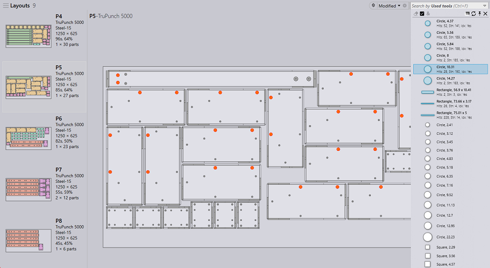

The Jobs search functionality has significantly improved in this build. This makes it easier to locate Jobs, Active Parts and Nests based of various:
● Order criteria like the priority, due date, customer, ordered part and quantity etc.
● Planning/Scheduling status like the scheduled machines, sheets to-do, sheets completed, nested parts, nested layouts etc.
● Nest attributes like nest efficiency, raw-material, unique and total parts, job IDs and counts.
The Part name field appears in the Jobs and the Nests page. Keying-in the search text, lists all sheets/jobs containing the parts matching the search term.

Selecting the items from the suggestion narrows down the search to the selected part(s).

This behavior extends to the jobs page as well. Job page can be searched using the Part name and the Layout name. Like the Part name field, a suggestion list is displayed for the layouts as well.
Priorities and due dates are assigned to a part in a job. The Priority field, like the “Part name”, lets users find nests/jobs with higher priority parts. The high priority parts can be located on a nest by highlighting them using mouse over the suggestion menu. Similarly, parts with specified due date can be searched and located on a nest using the highlight feature.

Apart from pre-defined due date filters like Today, Yesterday, tomorrow etc., you can also key-in the custom date values/ranges in yymmdd format into the search textbox. The acceptable date expressions are:
● Expressions with (in)equality operators  followed by the date value. E.g., >=220121 would search all items which are due on or after 21st Jan 2022.
followed by the date value. E.g., >=220121 would search all items which are due on or after 21st Jan 2022.
● Date range expressions like one in the image below. It searches for all nests due on or after 28th Jan 2022 and before 30th Jan 2022.
Like the Part Library, nests can also be searched by the used punch tools. To search by used tools:
● Select the Used tools field from the available filter columns. Praxis presents list of all available used tools.
● Generally, this is a long list, use search term like the tool name, shape, size etc. to narrow down this list to the tool you are looking for.
● Select one or more item from the list to filter parts where these tools are used. Switching to the details view, highlights the used tools and switching to simulation view reflects it back in the tooling preview.

Aside: Often the filter list hides the search content behind itself. Use Toggle opacity command to toggle the transparency. The transparency can also be toggled using the Right Mouse Click anywhere on the filter list.